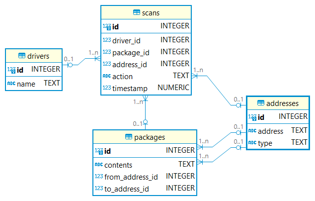

Code
library(DBI)
con <- dbConnect(RSQLite::SQLite(), "packages.db") # establish SQLite connection to the database
dbListTables(con) #list the tables in the database[1] "addresses" "drivers" "packages" "scans" Imagine you are a mail clerk for the city of Boston who oversees the delivery of mail across the city. For the most part, all packages sent are eventually delivered. However, every once in while, a mystery lands on your desk: a missing package! For each customer that comes to you with a report of a missing package, your task is to help each customer find their missing package and answer their relevant questions using just the information in the mail delivery service’s database, packages.db, which contains data on the transit of packages around the city.
The specific problems to solve and the schema of the database are described below.
The first report of a missing package comes from Anneke. Anneke walks up to your counter and tells you the following:
Clerk, my name’s Anneke. I live over at 900 Somerville Avenue. Not long ago, I sent out a special letter. It’s meant for my friend Varsha. She’s starting a new chapter of her life at 2 Finnegan Street, uptown. (That address, let me tell you: it was a bit tricky to get right the first time.) The letter is a congratulatory note—a cheery little paper hug from me to her, to celebrate this big move of hers. Can you check if it’s made its way to her yet?
Your job is to find out:
At what type of address did the Lost Letter end up?
At what address did the Lost Letter end up?
The second report of a missing package comes from a mysterious fellow from out of town. They walk up to your counter and tell you the following:
Good day to you, deliverer of the mail. You might remember that not too long ago I made my way over from the town of Fiftyville. I gave a certain box into your reliable hands and asked you to keep things low. My associate has been expecting the package for a while now. And yet, it appears to have grown wings and flown away. Ha! Any chance you could help clarify this mystery? Afraid there’s no “From” address. It’s the kind of parcel that would add a bit more… quack to someone’s bath times, if you catch my drift.
Your job is to find out:
The third report of a missing package comes from a grandparent who lives down the street from the post office. They approach your counter and tell you the following:
Oh, excuse me, Clerk. I had sent a mystery gift, you see, to my wonderful granddaughter, off at 728 Maple Place. That was about two weeks ago. Now the delivery date has passed by seven whole days and I hear she still waits, her hands empty and heart filled with anticipation. I’m a bit worried wondering where my package has gone. I cannot for the life of me remember what’s inside, but I do know it’s filled to the brim with my love for her. Can we possibly track it down so it can fill her day with joy? I did send it from my home at 109 Tileston Street.
Your job is to find out:
packages.db represents all recent package deliveries in the city of Boston with the help of following entities:
These entities are related per the entity relationship (ER) diagram below:

Let us now establish the SQLite connection to the database using DBI package and also list the tables in the database.
[1] "addresses" "drivers" "packages" "scans" Click the tabsets below to learn more about the schema of each individual table in the packages.db.
The addresses table contains the following columns:
id, which is the ID of the addressaddress, which is the street address itself (i.e., 7660 Sharon Street)type, which is the type of address (i.e., residential, commercial, etc.)The sample data of the addresses table can be seen below.
The drivers table contains the following columns:
id, which is the ID of the drivername, which is the first name of the driverThe sample data of the drivers table can be seen below.
The packages table contains the following columns:
id, which is the ID of the packagecontents, which contains the contents of the packagefrom_address_id, which is the ID of the address from which the package was sentto_address_id, which is the ID of the address to which the package was sent. It’s not necessarily where it ended up!The sample data of the packages table can be seen below.
The scans table contains the following columns:
id, which is the ID of the scandriver_id, which is the ID of the driver who created the scanpackage_id, which is the ID of the package scannedaddress_id, which is the ID of the address where the package was scannedaction, which indicates whether the package was picked up (“Pick”) or dropped off (“Drop”)timestamp, which is the day and time at which the package was scannedThe sample data of the scans table can be seen below.
| id | driver_id | package_id | address_id | action | timestamp |
|---|---|---|---|---|---|
| 1 | 11 | 8502 | 1063 | Pick | 2023-07-11 15:16:05.340221 |
| 2 | 8 | 3320 | 9551 | Pick | 2023-07-11 15:19:39.359315 |
| 3 | 1 | 2879 | 9589 | Pick | 2023-07-11 15:23:47.208594 |
| 4 | 20 | 2240 | 3464 | Pick | 2023-07-11 15:28:16.920400 |
| 5 | 1 | 8664 | 8013 | Pick | 2023-07-11 15:32:42.265139 |
From the problem statement, it is clear that we know the from address, i.e., 900 Somerville Avenue, and the package is some kind of letter. However, we do not know the to address.
To answer the above two questions, we need to query the packages table to find the id of the packages using the from address, i.e., ‘900 Somerville Avenue’ and filtering for entries that contain the word ‘letter’ in the ‘contents’ column. Once we know the package_id, we can find the address_id, since the package was delivered somewhere, by setting the ‘action’ column to ‘Drop’ by querying the ‘scans’ table. Finally, we can then determine the type of address and the address where the letter ended up by querying the ‘addresses’ table using the obtained ‘address_id’.
| type | address |
|---|---|
| Residential | 2 Finnigan Street |
So, the answers to the questions are as follows:
Residential2 Finnigan StreetHere, all we know is that the from address is not provided, and the package was delivered somewhere.
To answer the first question, we need to query the ‘scans’ table to find the address_id using the ‘package_id’ where the from address is NULL and set the ‘action’ column to ‘Drop’ as the package was delivered. After obtaining the address_id, we can use it to find the the type of address where the package ended up by querying the ‘addresses’ table.
For the second question, i.e., to know the contents of the package, we just need to query the ‘packages’ table where the from address is NULL.
| type |
|---|
| Police Station |
| contents |
|---|
| Duck debugger |
So, the answers to the questions are as follows:
Police StationDuck debuggerIn this problem, we know the from address, i.e., 109 Tileston Street, and the to address, i.e., 728 Maple Place, but we do not know the contents of the package. The additional crucial information that we know is the package is yet to be delivered. This implies that the package is still with the driver.
To solve the first question, we need to query the ‘packages’ table where the from address is ‘109 Tileston Street’ and the to address is ‘728 Maple Place’.
For the second question, all we need to know is the name of that driver since the package is still with the driver. For this, we need to query the ‘scans’ table to get the driver_id of that single driver involved. In doing so, we need to make sure that we get only one ‘driver_id’ by conditioning the query on columns that we know so far, i.e., ‘package_id’, which can be found using the from address and the to address, ‘address_id’, which cannot be the from address, and the ‘action’ is ‘Pick’. Once we know the ‘driver_id’, we can find the name of the driver using that.
| contents |
|---|
| Flowers |
SELECT "name" FROM "drivers"
WHERE "id" IN (
SELECT "driver_id" FROM "scans"
WHERE "package_id" = (
SELECT "id" FROM "packages"
WHERE "to_address_id" = (
SELECT "id" FROM "addresses"
WHERE "address" = '728 Maple Place'
)
AND "from_address_id" = (
SELECT "id" FROM "addresses"
WHERE "address" = '109 Tileston Street'
)
)
AND "address_id" != (
SELECT "id" FROM "addresses"
WHERE "address" = '109 Tileston Street'
)
AND "action" = "Pick"
);| name |
|---|
| Mikel |
So, the answers to the questions are as follows:
FlowersMikel